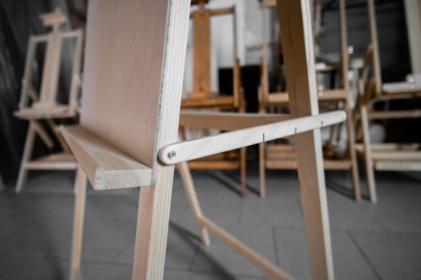

Любимый мольберт художественных школ, училищ и вузов.

Надежный, устойчивый мольберт. Планшет выполнен из высококачественной шлифованной фанеры. Фиксация угла открытия осуществляется ограничителем-гребенкой. Мольберт оснащен полочкой, на которую удобно складывать художественные принадлежности.
Популярность среди художественных учреждений обусловлена максимальной простотой конструкции, невысокой ценой и наличием планшета в базовой комлектации.
Мольберт получил свое название «Хлопушка» из-за характерного звука, раздающегося при складывании (схлапывании).
Эта модель хорошо подходит для рисования на бумаге, которую удобно крепить к фанерному планшету.